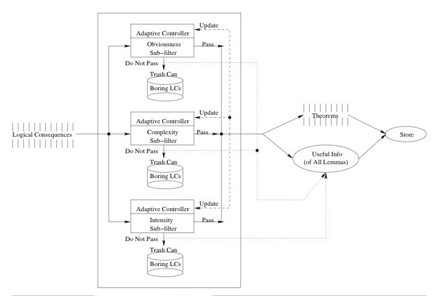

RunTime Filter

Thresholds
LCs must pass all three thresholds
Minimal information about filtered LCs retained
Adaptive Control
Thresholds updated to level of top few LCs passed
Second filtering run to eliminate early birds
Filters
Obviousness
measures derivation size
Weight
measures number of symbols
Complexity
measures number of different symbols
Surprisingness
measures unexpected co-occurences of symbols
Intensity
measures information summary
Adaptivity
measures variable constraints
Focus
measures polarity of atoms